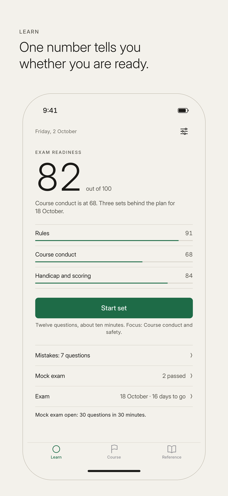

Platzreife PRO
Platzreife and first round
Prepares you for the golf course permit, with questions on rules, etiquette, handicap and scoring, each with an explanation.
Get it on the App Store – Platzreife PROPlatzreife PRO prepares you for the DGV Platzreife, Germany's golf course permit, and then comes along on your first round.
Download on the App StoreEvery feature is open to you without limits: as many practice sets and mock exams as you need, practising your mistakes, all round types, all etiquette scenes and importing your own course.

Who it is for
Platzreife PRO is written for people in Germany who would rather prepare in English. Everything in it follows the German exam: the format of the theory test, the assessment on the course and the Rules of Golf as the German Golf Association (DGV) applies them. Your club decides in which language it holds the exam, so it is worth asking in advance.
Learn
You learn in sets of twelve questions, each of which takes about ten minutes. The catalogue holds 170 questions written for the app on the rules, behaviour on the course, handicap and scoring, and every answer comes with a short explanation and the number of the rule it rests on. Whatever you get wrong goes into your mistakes and comes back at growing intervals until it stays with you. Once a few have collected there, you can also practise them as a set of their own.
How far along you are is shown as a number between 0 and 100. It is calculated from your answers, and the app tells you what goes into it. At 70 the mock exam opens. It runs like the real one, with thirty questions in thirty minutes and the rules section and the general section marked separately. Afterwards you see how many more mistakes you could have afforded and go through every wrong answer with its explanation.
On the course
Some things are not learned from questions. The etiquette scenes play through situations that really happen on the course, the demonstration hole takes you round a hole station by station, and the first-round checklist keeps track of what should be done before you tee off.
During the round the round assistant takes over: it shows the distance to the centre of the green, counts your strokes and gives your net par for every hole, which it explains in one sentence on the first. After each hole the scorecard shows where you made net par and where you did not, and now and then a quiet reminder about etiquette appears, never more than four times a round. In an exam round and in competition, Platzreife PRO holds back all advice that Rule 4.3 does not allow; the distance stays.
For the distance, Platzreife PRO needs to know where the greens are. Two fictional sample courses are included, and you can import your own course as a course file. How that works is explained under Support.
Look things up
Whatever you want to look up is in the Reference tab. Rules by situation walks you through 25 situations step by step, the glossary explains 60 terms, and further sections cover handicaps and the World Handicap System as well as what the Platzreife and club membership usually cost in Germany. Search finds terms even under an older name such as "water hazard", and when it finds nothing it suggests common terms to try instead.
Your data
Platzreife PRO needs no account and collects no data about you. Your progress stays on your device or in your iCloud Drive, and you can export it as a file at any time. The app uses your location only during a round and only on the device. The details are in the privacy policy.
- DeviceiPhone and iPad with iOS 17 or later
- LanguagesEnglish, German
- Accountnot needed
Note
Platzreife PRO is an independent product and is not affiliated with the Deutscher Golf Verband e. V. (German Golf Association). The questions were written for the app and are not taken from the official question catalogue. The exam itself is held by your golf club.